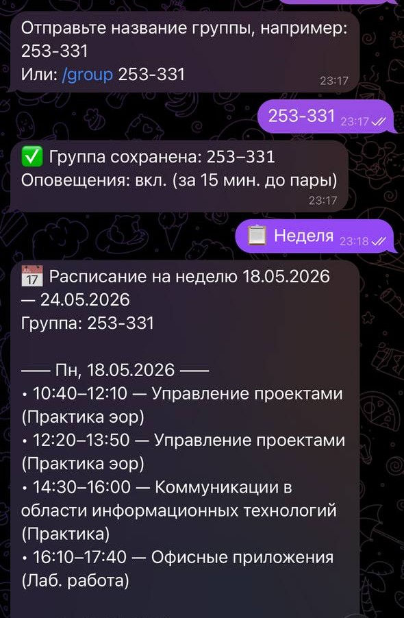

PolySchedule Bot
Telegram-бот для просмотра расписания Московского Политеха, разработанный в рамках дисциплины «Проектная деятельность».
Проект позволяет студентам быстро получать информацию о занятиях, аудиториях и времени проведения пар прямо через Telegram без необходимости искать расписание на сторонних ресурсах.
Подробнее о проекте
О проекте
PolySchedule Bot создаётся для упрощения доступа студентов Московского Политеха к актуальному расписанию занятий. Использование Telegram делает получение информации максимально быстрым и удобным.
Основные возможности
Расписание на сегодня
Быстрый просмотр текущих занятий, времени проведения и аудиторий.
Расписание на неделю
Получение полной информации о занятиях на ближайшие дни.
Работа через Telegram
Использование привычного мессенджера без установки дополнительных приложений.